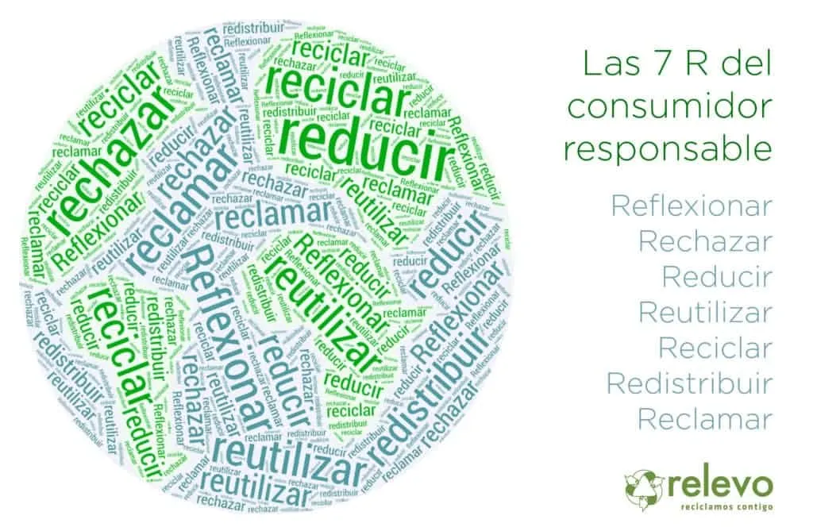

Las 7R's Aplicadas en mi Comunidad
¿Qué son las 7Rs?
Las 7R's son una evolución de las famosas 3R (Reducir, Reutilizar, Reciclar) y representan principios ecológicos para un estilo de vida más sostenible.

Dentro de este programa, la Oficina Verde de la Universidad de Burgos (UBUverde) presenta esta Conferencia Ambiental presencial y online “Las siete R básicas de la Economía Circular: rediseñar, reducir, reutilizar, reparar, renovar, recuperar y reciclar”, en cuyo recorrido nos acompañará el ponente Luis Marcos, profesor e investigador de la Universidad de Burgos (UBU), en la cual dirige su Oficina Verde (UBUverde) centrando su labor docente e investigadora en temas vinculados al Medio Ambiente y la Nueva Ruralidad; un auténtico convencido del poder que la Economía Circular tiene para frenar el agotamiento de materias primas, el despilfarro energético y la generación incontrolable de todo tipo de residuos.